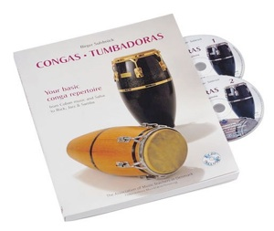
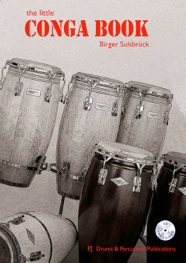
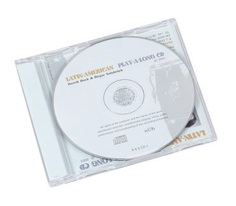
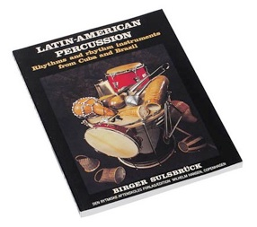
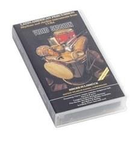
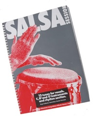

BOOKS and CD'S

One of the most popular percussion instruments today is, without a doubt, the Cuban tumbadora.
This book and CD combination is a study of the conga rhythms and techniques that the author recommends as the basic repertoire for the all-round conga player. Made as a step by step system, this material starts with the basic strokes on the congas and contains extensive coverage of many important rhythms and styles of music.
Following this material will provide you with a comprehensive repertoire of dynamic and exciting rhythms. It will help you to achieve technical and musical versatility, giving you the ability to compose your own rhythms and the freedom to choose your own style of playing.
The Book contains 144 pages of practice material and information.
The two accompanying CDs have 170 tracks of rhythms and variations together with examples of the phonetic sounds of the rhythms.
Et af de mest populære percussioninstrumenter i dag er uden tvivl den cubanske tumbadora.
Denne kombination af bog og CD er et studie i de conga-rytmer og -teknikker, som forfatteren anbefaler som grundrepertoire for den alsidige congaspiller. Materialet er bygget op trin for trin - det begynder med de grundlæggende slag på congaerne og dækker mange vigtige rytmer og musikstilarter.
Bogen indeholder 144 sider med øvemateriale og information.
De to medfølgende CD'er har 170 numre med rytmer og variationer samt eksempler på rytmernes fonetiske lyde.
"Shed any attitude about latitude! Although the North Sea is a long way from the Caribbean, this outstanding conga instruction book/CD package from Denmark is very much in touch with the tropical pulse". "Sulsbrück's thorough instruction on conga strokes and technique is especially strong. The photos of ink-stained hands are a clever device for portraying the portions of the hands used in specific strokes. … Though the emphasis is on Cuban music, samba, jazz, salsa variations, fusion, and rock patterns are also offered. It's up-to-date, hip, and thick with info. How do you say "caliente" in Danish?"
MODERN DRUMMER MAGAZINE, Jeff Potter, USA, April 2000

This book and CD combination is a quick introduction about how to start playing congas. First you learn how to tune your new drums and how to lower the rim if it is too high. From here the book is a step-by-step guide starting with the basic strokes on the congas followed by the rhythms and techniques that I recommend for your basic conga repertoire. You simply get the information in the necessary order.
PJ Drums & Percussion Publications, Copenhagen. 44 pages and a CD.
If you want more information you can always continue with my complete 144 page conga book: CONGAS · TUMBADORAS, Your basic conga repertoire - from Cuban music and Salsa to Rock, Jazz & Samba, including 160 tracks on two CDs, extensive coverage of important rhythms, phonetics, practice routines and history of the congas too.
Denne kombination af bog og CD er en hurtig introduktion til at komme i gang med at spille congas. Først lærer du at stemme dine nye trommer og at sænke kanten, hvis den er for høj. Herfra er bogen en trin-for-trin-guide, der begynder med de grundlæggende slag på congaerne, efterfulgt af de rytmer og teknikker jeg anbefaler som dit grundrepertoire. Du får ganske enkelt informationen i den nødvendige rækkefølge.
PJ Drums & Percussion Publications, København. 44 sider og en CD.
Vil du videre, kan du fortsætte med min komplette conga-bog på 144 sider: CONGAS · TUMBADORAS.

Henrik Beck andog Birger Sulsbrück
New great sounding Latin American Play-a-long CD for your practicing of various Cuban rhythms - and a few examples of the Brazilian samba as well.
Starting at slow speed, in the bolero, you continue through various Cuban styles like cha-cha-chá, son montuno (slow and faster), songo, guaracha, pachanga and Afro-Cuban 6/8 until the fast Rumba.
All rhythms (except the pachanga) are played in both clave directions: 3-2 and 2-3.
The samba also played in both rhythmical directions. Here referred to as "on" and "off".
Chords for tuned instruments are included on the inside of the cover.
Ny, velklingende latinamerikansk Play-a-long CD til din øvning af forskellige cubanske rytmer - og et par eksempler på brasiliansk samba.
Du begynder i langsomt tempo med bolero og fortsætter gennem cubanske stilarter som cha-cha-chá, son montuno (langsom og hurtigere), songo, guaracha, pachanga og afrocubansk 6/8 frem til den hurtige rumba.
Alle rytmer (undtagen pachanga) spilles i begge clave-retninger: 3-2 og 2-3.
Sambaen spilles også i begge rytmiske retninger, her kaldet "on" og "off".
Akkorder til melodiske instrumenter findes på indersiden af omslaget.
"Musical, instructive and groovy!"
STICKS, Tom Schäfer, Germany, November 2004

LATIN-AMERICAN PERCUSSION
Rhythms and rhythm instruments from Cuba and Brazil
Book: 184 pages and 138 NEW audiotracks - see "Download"Bog: 184 sider og 138 NYE lydspor - se "Download"
To Birger -
The talent of his knowledge has made him write a wonderfull book.
Your boy
TITO PUENTE "84"
… "What could a Danish percussionist named Birger Sulsbrück possibly offer us on the subject of Latin American instruments of Cuba and Brasil? Well the answer is: plenty!" … "The beauty of this book lies in the answers" … "This package is worth every cent. From Denmark to Latin America, Birger Sulsbrück has truly bridged the ocean with this one".
MODERN DRUMMER MAGAZINE, Mark Hurley. USA, July, 1984

LATIN-AMERICAN PERCUSSION
Rhythms and rhythm instruments from Cuba
VIDEOSESSION
Pressenting: Claves, congas, Bongos/cowbell, timbales, guiro and maracas.
A complete rhythmgroup and singers performing:
Bolero, Cha-cha-chá, Son Montuno, Mambo, Guaracha and Rumba.
Duration: 45 min.
The textbook includes the various styles for piano and bass and a historical part presenting the Cuban music styles.
Notice: Will shortly be available on DVD.
Since this is in "1988 VHS quality" at a lover price.
Look for updates here on this website!
Præsenterer: claves, congas, bongos/cowbell, timbales, guiro og maracas.
En komplet rytmegruppe og sangere spiller:
bolero, cha-cha-chá, son montuno, mambo, guaracha og rumba.
Varighed: 45 min.
Lærebogen indeholder de forskellige stilarter for klaver og bas samt en historisk del, der præsenterer de cubanske musikstilarter.
Bemærk: udkommer snart på DVD - da denne er i "1988 VHS-kvalitet", til en lavere pris.

Salsa Session
OUT OF STOCK - OUT OF PRINT from the publisher - unfortunately!UDSOLGT - UDGÅET fra forlaget - desværre!